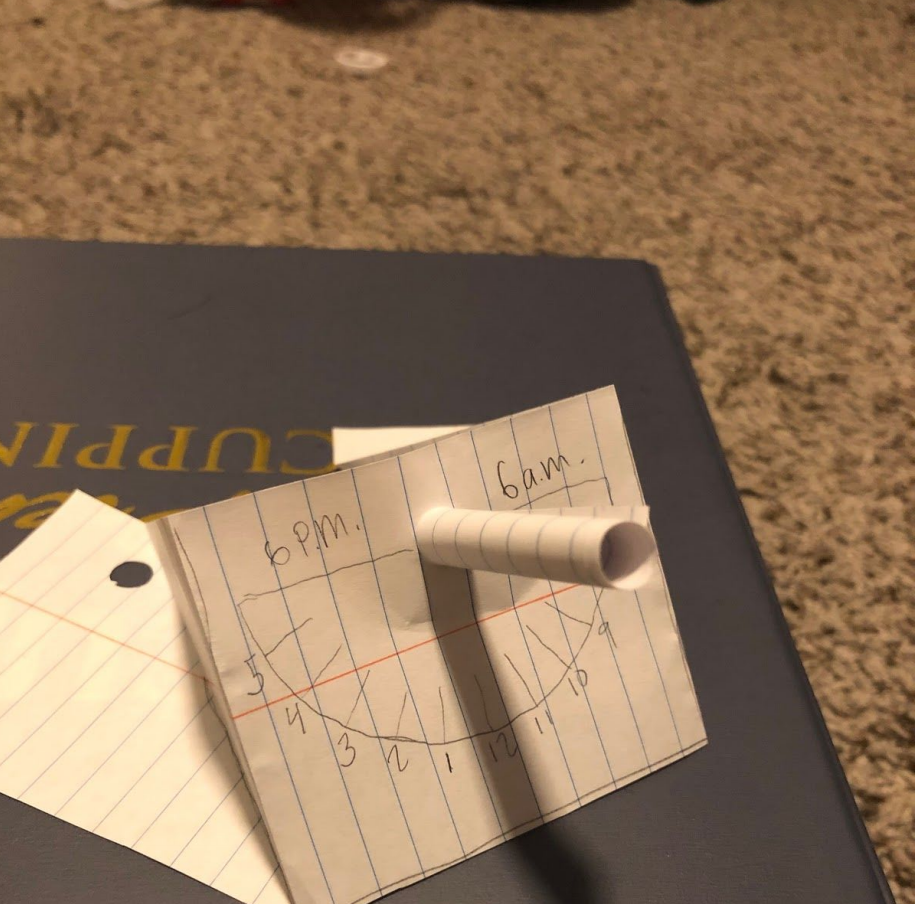
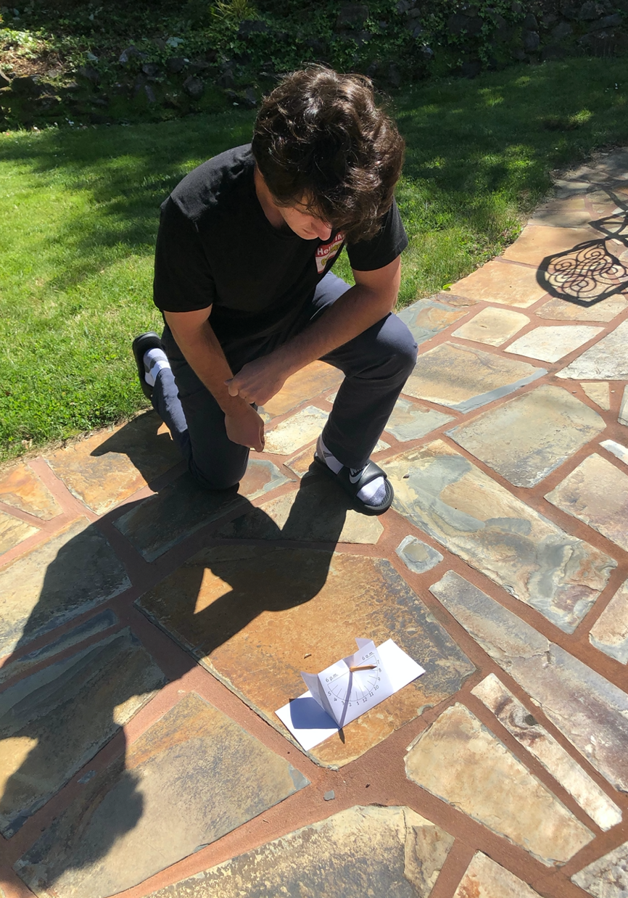

Starting the week of March 16, we did not conform to the planned Syllabus due to the shelter-in-place disruption.
The following three labs were created and performed at home:
Some photos of the Sundial lab:
Natalie Aliotti's Sundial, including East-West Alignment

Michael Benito's Sundial, nice improvisation for lacking a printer

Joe Cassin's Sundial, watch showing 10:47 PDT, sundial showing about 9:47 PST

Daniel Huston's Sundial, reading 2:30pm (add one hour 8 minutes to get PDT)